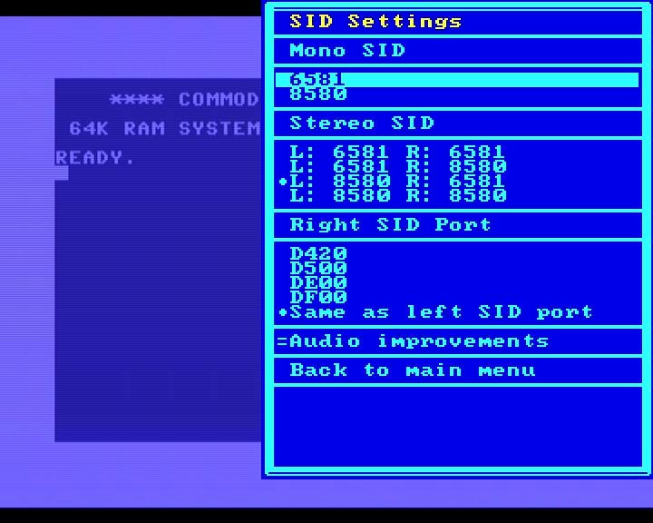

Audio output and SID
About the SID
The Commodore 64 even today is praised for its unusual sound chip, the SID. Every year many fantastic “chiptunes” are composed on standard C64 computers. The C64 Core gives you a very complete SID experience with some nice enhancements over original hardware.
6581 vs. 8580
Actually, there is not the “one SID”. First of all, as the SID does contain some analog circuitry, individual chips have slightly individual sounds. This goes so far that some Audio CDs have been released which contain game tunes mastered from the C64 the composer used himself to make sure that the exact sound is recorded.
Also, Commodore produced two different versions of the SID. The older one is the 6581. It is claimed that this version was rushed and does not fully follow the specifications of its creator. The later version is called the 8580 and it has a distinctively different sound, especially when the SID is used to play “sampled” sounds. Some demos are finetuned to a specific SID - as a rule of thumb, anything that was programmed past the year 2000 is expecting an 8580.
With standard settings, the C64 Core is mimicking a 6581 SID (the older one) but can be switched to a 8580. You can switch in real time while a program is running.
Pseudo Stereo
The SID is a mono device but the C64 Core allows you to simply run two SID chips in parallel. The C64 side only sees one SID, but basically two instances are running, one for the left stereo channel and one for the right stereo channel.
The Core especially allows you to select different chips for the two different channels. This leads to some very pleasing pseudo stereo effects. These are unintended because no composer ever had such a setup. The C64 still only plays mono music, but the Core plays it with one chip on the left and the other on the right.
Stereo SID
To get real stereo sound of course you need two independent SID chips and specially written software. There are some modern demos and very few modern games that can use this setup. The second SID chip must have a different memory adress than the first one. This can lead to compatibility problems if a program does not expect a 2nd SID at that location.
Core Configuration
In the SID settings you can first just select one mono SID (like in a real C64) and can chose between the 6581 or the 8580.
Below that you will find four options which will put your choice of SID on the left and right channel.
Below that you can set an adress for the right channel SID. If you leave it at the same adress as the left SID, you are set up for Pseudo Stereo as described above.
Depending on the game or demo you want to run in Stereo, you can set the right SID at a different location. This is highly dependent on the specific program you want to run. You can switch this in real time and the worst thing that can happen is that the demo or game will crash. $D420 is the adress used most often.
Audio Enhancement
Turning this setting on will produce some fuller and filtered sound in post processing, so does not interfere with the actual SID. It is recommended to keep this on.
Analog and HDMI output.
If you have set the HDMI mode to DVI, only the analog audio output is active. In all other modes, audio is always output both on HDMI and analog in parallel. Due to the processing in your monitor, you might hear a tiny delay on HDMI compared to analog.
HDMI Flicker Free
If you have turned on the HDMI Flicker Free option, the whole C64 is slowed down slightly. This can have some effects on music when it uses digitized sound. Most people will not hear the difference, but if you need pitch perfect output, please turn off the Flicker Free option.